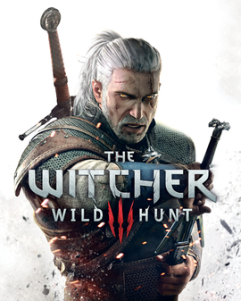

The Witcher 3: Wild Hunt
The Witcher 3: Wild Hunt (em polonês: Wiedźmin 3: Dziki Gon) é um jogo eletrônico de RPG de ação em mundo aberto desenvolvido pela CD Projekt RED e lançado no dia 19 de maio de 2015 para as plataformas Microsoft Windows, PlayStation 4, Xbox One e em outubro de 2019 para o Nintendo Switch, sendo o terceiro título da série de jogos The Witcher. Ele sucede The Witcher (2007) e The Witcher 2: Assassins of Kings (2011), que foram baseados na série de livros de fantasia Wiedźmin, do escritor polonês Andrzej Sapkowski.
Ambientado em um gigantesco cenário medieval que dá liberdade total ao jogador, o game, que possui uma jogabilidade não linear e é jogado através de uma perspectiva em terceira pessoa, tem o lendário bruxo Geralt de Rívia como seu protagonista, o qual inicia uma longa jornada pelos Reinos do Norte. Enquanto a ordem planetária enfrenta uma grande mudança, com o misterioso e macabro exército de cavaleiros vermelhos conhecido como a "Caçada Selvagem" deixando somente sangue e ruína por onde passa, o jogador terá de enfrentar diversos perigos, usando espadas e magia num mundo em crise, à medida que interage com outros personagens e completa missões para o progresso da história, podendo viajar a pé, a barco, ou montado em Carpeado, o cavalo inseparável de Geralt.
Jogabilidade
Apesar de ser similar aos outros jogos da série The Witcher, Wild Hunt melhorou sua jogabilidade em diversos aspectos. O estilo de combate, que foi completamente renovado, decorre num sistema usual do gênero RPG de ação combinado com o uso de magias, e entre as novas mecânicas introduzidas no game, estão os "sentidos de bruxo", a técnica de combate a cavalo e em alto mar, a possibilidade de mergulhar, e a inclusão de uma besta como arma alternativa. Além disso, Geralt agora pode saltar, escalar e pular sobre objetos, algo que não era possível nos títulos antecessores. As mecânicas de escalada foram descritas por seus desenvolvedores como "não tão iguais" às de Assassin's Creed, mas mais "similar ao que temos em Uncharted". A criação de itens e poções permanece como nos jogos anteriores, apesar de com uma leve modificação em relação a The Witcher 2, e os cinco sinais de bruxo(igni,quen,yrden,axii,aard) retornam ligeiramente modificados, tendo cada um deles uma forma diferente de ser utilizada.
Cada escolha ou atitude que o jogador toma afeta o mundo do game; todas as missões possuem inúmeras opções para as completar, o que interfere muito no resultado de cada uma delas. A CD Projekt RED refere que são necessárias, no mínimo, 100 horas para terminar o jogo, sendo 50 horas com missões secundárias e a outra metade com a história principal, podendo chegar a mais de 200 horas se o jogador decidir "fazer tudo" no game
Cenário
The Witcher 3: Wild Hunt apresenta um enorme mundo por onde o jogador pode vagar livremente, dependendo de qual parte da história estiver sendo jogada, dispondo de inúmeros locais para serem visitados, como a grande Cidade Livre de Novigrad, os abomináveis pântanos de Velen, as deslumbrantes ilhas de Skellige, e os territórios do Império de Nilfgaard, que entre eles, se inclui o grandioso Castelo Real em Vizima. A escola de bruxos de Kaer Morhen, conhecida dos livros e do primeiro jogo, também pode ser explorada.
Cada local tem um grande número de povoados, todos com as suas próprias condições econômicas e sociais. Nilfgaardianos, por exemplo, parecem ser aristocráticos e condescendentes com os mais usuais nórdicos, como Geralt. O mundo do game é imensamente interativo e imersivo se comparado com os melhores jogos do gênero de mundo aberto, com vilarejos abandonados, cavernas e florestas assombradas, tesouros escondidos, torneios de luta, corridas de cavalo, rituais ancestrais, e esconderijos de monstros, bandidos e assassinos. O surpreendente nível de detalhes do jogo pode ser visto com a variedade de tipos de criaturas que habitam cada região, sendo que alguns só aparecem em determinada hora do dia.
Enredo
The Witcher 3: Wild Hunt conclui a história do lendário bruxo Geralt de Rívia, o protagonista da série, que vem sendo contada nos jogos antecessores e nos livros da série cronologicamente anteriores a esses. Bruxos são humanos geneticamente modificados ensinados a lutar contra monstros desde jovens, possuindo diversas habilidades especiais, as quais divergem de bruxo para bruxo. Com grande conhecimento alquímico, estes caçadores de recompensas usam a magia em grande parte de seu cotidiano, sobrevivendo ao matar criaturas monstruosas e outras ameaças em troca de dinheiro. No entanto, apesar de serem cultos pela educação que receberam na juventude, sofrem grande preconceito da sociedade por submeterem-se a vários experimentos durante seu treinamento, sendo muitas vezes considerados como aberrações pelas pessoas.
Partindo exatamente do final de The Witcher 2, com os outrora poderosos que procuravam usar-lhe já não existindo mais, Geralt, apelidado de "lobo branco" por seus olhos animalescos e cabelos brancos, que são efeitos colaterais dos experimentos pelos quais passou, dá seguimento a sua aventureira vida, embarcando numa importante missão pessoal enquanto a ordem mundial enfrenta mudança. A nova missão do caçador de monstros é dada em tempos sombrios nos quais um misterioso exército conhecido como a "Caçada Selvagem" invade os Reinos do Norte, deixando apenas sangue e ruína por onde passa; parece que Geralt é a chave para os parar.
Desenvolvimento
The Witcher 3: Wild Hunt demorou três anos e meio para ser produzido, tendo um custo de produção e marketing ultrapassando os $81 milhões, sendo que, junto com a equipe da CD Projekt RED, estiveram envolvidos na criação do jogo mais de 1500 pessoas por todo o mundo. O game foi anunciado oficialmente em 4 de fevereiro de 2013 pela Game Informer, com um lançamento inicialmente previsto para 2014 no PC e em "todos os consoles de última geração", frase que mostrou-se posteriormente significar um lançamento para o Xbox One e o PlayStation 4. De acordo com informações oficiais da Microsoft, o jogo originalmente não estaria disponível para o Xbox One na Polônia, o país onde o processo de desenvolvimento ocorreu. No entanto, isso mudou depois das restrições regionais terem sido totalmente removidas deste console.
Em 11 de março de 2014, a data de lançamento do jogo foi adiada para fevereiro de 2015. Naquele momento, de acordo com um comunicado oficial divulgado pela equipe de desenvolvimento, eles já haviam criado com sucesso "uma história que flui naturalmente, cinematograficamente, possui efeitos sonoros e visuais incríveis, e que preserva ao mesmo tempo a plena liberdade de escolha", sugerindo que a parte central do jogo e sua história principal estavam praticamente prontas. No entanto, a declaração, em seguida, citou que o principal motivo do adiamento foi a necessidade de ajustes finos manuais de muitos detalhes e testes do produto final para lançá-lo com o padrão de qualidade desejado. No dia 8 de dezembro do mesmo ano, os desenvolvedores anunciaram um novo adiamento, desta vez para 19 de maio de 2015, indicando novos ajustes no game para deixá-lo com uma qualidade impecável.No dia 7 de abril de 2015, a CD Projekt RED anunciou que, além de contar com 16 pacotes de conteúdo gratuitos, lançaria dois pacotes de expansão para o jogo: Hearts of Stone e Blood and Wine, e em 16 de abril, a empresa disse que a produção do jogo tinha entrado em sua fase Gold, o que indica que já estava preparada para fazer as cópias e lançá-lo.
Prêmios
Com mais de 200 prêmios ganhos depois de apresentado em eventos como a E3 e a Gamescom ainda antes de seu lançamento, The Witcher 3 quebrou surpreendentes recordes de premiações. Além de todos os elogios recebidos do público, o game se tornou o mais premiado na história da indústria de jogos eletrônicos, conquistando gratificações de organizações como a Golden Joystick Awards, a The Game Awards, a D.I.C.E. Awards, a Game Developers Choice Awards, e a SXSW Gaming Awards, assim como o reconhecimento de publicações como IGN, GameSpot, Game Informer e inúmeros outros sites especializados. Atualmente, o game acumula mais de 800 prêmios recebidos, sendo mais de 250 deles o de Jogo do Ano, o feito máximo para um jogo eletrônico.
The Witcher 3: Wild Hunt
| Desenvolvedores | CD Projekt Red |
| Publicadora | CD Projekt |
| Diretores | Konrad Tomaszkiewicz Mateusz Kanik Sebastian Stępień |
| Projetistas | Grzegorz Mocarski Mateusz Tomaszkiewicz |
| Escritores | Marcin Blacha |